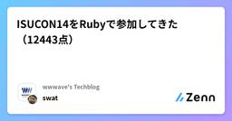

wwwave's Techblogのフィード
https://zenn.dev/p/wwwave
株式会社ウェイブのエンジニアによるテックブログです。 弊社では、電子コミック、アニメ配信などのエンタメコンテンツを自社開発で運営しております！ https://wwwave.jp/service/
フィード

ISUCON14をRubyで参加してきた（12443点）
wwwave's Techblogのフィード
はじめに2回目のISUCONに参加してきました！最終スコアは12443で834組中（多分）103位。言語別Ruby9位でした！前回は振るわない結果でしたが、その反省を活かして成長できた部分がありました。一方で、まだまだ改善の余地を感じる結果となりました。ブログを書くまでがISUCON！ということで書いていきたいと思います。 事前準備本番2ヶ月前から毎週30分集まって過去問を各々解いていく形で学習を進めました。AWSで過去問環境用サーバーを構築していたのですが、毎回過去問の環境を立ち上げるところなどで時間を取られて、やっと集中できてきたなと思ったときには終わってしま...
4日前

【新卒コラム】何もわからなくてもやってたらなんとかなる（かも）
wwwave's Techblogのフィード
新卒完全未経験でエンジニアになってはや八ヶ月...そろそろ年も明けるので、振り返りがてら最初のうちはわからなかったフロントエンドとバックエンドの関係を理解するまでの過程を書いていきます未経験者の目線を皆様にお届けできたらと思います。 フロントエンドとバックエンドフロントエンドは見た目を色々やっていて、バックエンドはなんかサーバーのやつというくらいの事前知識はありましたが、具体的に何をどうしているのかは最初わかりませんでした。入社時に受けた研修で使用したRails Tutorialではviewも含めたアプリケーションの全てをRailsで作っており、その後それとは別でvue.js...
10日前
New WWWaver! 新卒エンジニアの１日に密着！！
wwwave's Techblogのフィード
この記事は、社内アドベントカレンダー12/5の記事です！今回は2024年新卒入社のSさんの１日に密着してみました。新卒エンジニアはどんなスケジュールで仕事をしているのか？気になる方はぜひ読んでみてください！ 新卒エンジニアSさん プロフィール４年制大学の文系学部を卒業海外への漫画/アニメ配信サービス Coolmicの開発を担当Web開発の技術は入社後の研修で身につけました趣味はゲームセンターでの音ゲー 1日のスケジュール9:30 出社9:30~ MT: エンジニア朝会9:45~ 作業時間111:00~ MT: プロダクト朝会11:30~ 作業...
15日前
イベントエンティティを意識したデータベース設計について考えた
wwwave's Techblogのフィード
はじめに株式会社ウェイブでCoolmicのエンジニアをしている布施です。Coolmicは日本のコミックを海外向けに配信するWEBサービスです。社内の勉強会的な場で、良いデータベース設計とはどのようなものなのだろうという話をしました。イミュータブルデータモデルの話をする中で、なんとなくイメージができてきたので少し書きます。 イベントエンティティイミュータブルデータモデルは一度保存したデータを変更しないようにする考え方です。データの全ての変更履歴にアクセスすることができるなどのメリットがあります。保存するデータ量が増えてデータベースの規模が大きくなってしまうなどのデメリ...
16日前
スクラム・トランプやってみた！
wwwave's Techblogのフィード
スクラム・トランプとはスクラムの雰囲気をトランプゲームを通して体験できるワークショップとなります。遊び要素もあり、独自ルールを作る余白もあります。 進め方タイムラインはこんな感じです。具体的な進め方はこちらの記事に詳しく書いてあるので参考にしてみてください。スクラム・トランプ光のゲームと闇のゲームはこちらの記事から拝借しました。スクラム体験ゲーム ~チーム開発の光と闇~ を開催してみた #エンジニア - Qiita12人で開催。１チーム6人で、出来上がった役で勝負。準備物はPOが作るポーカーの役のルール表と、成城石井のナポリタンチョコレート。あとトランプ。...
17日前
【Nuxt3】CSRからユニバーサルレンダリングへ移行する前に考えておきたいこと
wwwave's Techblogのフィード
この記事は、社内アドベントカレンダー12/2の記事です！ はじめに株式会社ウェイブの秋山です。現在開発しているプロダクトではNuxt3でCSRを使用しています。以前ユニバーサルレンダリングへの移行を検討したことがあり、その時の調査で感じたことを書いていきます。 CSR/ユニバーサルレンダリングとは詳細は公式ガイドに記載されていますので、ここでは簡単にご紹介いたします。 CSR(Client-Side Rendering)とはクライアントからリクエストが来た際に、サーバーではほぼ空のHTMLとJavascript/CSSを返し、クライアント側でコンテンツのレンダリン...
18日前
アーキテクチャConference 2024 に現地参加しました！
wwwave's Techblogのフィード
アーキテクチャConference 2024とは本カンファレンスでは、ご登壇者の方々に今一度システムの基盤となるアーキテクチャの思考法や手法といった全体像から、他社が実践した具体的な構築事例といった部分像までをお話しいただくことで、アーキテクチャに対する考え方を学び直し、発想を広げられることを目指しています。https://architecture-con.findy-tools.io/2024/top 開催情報開催日：2024年11月26日会場：浜松町コンベンションホール形式：オフライン・オンラインのハイブリッド開催 印象に残ったセッション 『Mode...
22日前
学び続けるエンジニアになる！“輪読会”の紹介
wwwave's Techblogのフィード
株式会社ウェイブ エンジニアのMNです。みなさんは、入社後に自分がどのように成長できるのか不安に思うことはありませんか？弊社では、学びの文化を大切にしており、その一環として「輪読会」を継続的に実施しています。この記事では、弊社での輪読会の仕組みや成果、そしてその魅力をお伝えします！ 輪読会の仕組みと運営方法弊社の輪読会では、参加者の状況やテーマに合わせて柔軟な進行方法を選択します。事前準備を行う場合スライドや書籍を事前に読み、わからなかったことや話したいことをリストアップして臨むことで、議論の焦点が定まり、深い学びが得られます。その場で書籍を読む場合忙しいときや、すぐ...
22日前
PayPalサブスクリプションの実装でHATEOASと出会った
wwwave's Techblogのフィード
はじめに株式会社ウェイブでCoolmicのエンジニアをしている布施です。Coolmicは日本のコミックを海外向けに配信するWEBサービスです。PayPalのサブスクリプション機能を実装する中でHATEOASというものを初めて知りました。調べたことを書きました。 どこで登場する？プラン変更を実装しているとAPIドキュメントにこのような文言が出てきます。This type of update requires the buyer's consent.同意ってどうやって取るんだと思っているとAPIのレスポンスにこんなものがありました。サブスクリプション作成にも同じ...
2ヶ月前
PayPalサブスクリプションにおけるプラン変更実装の注意点
wwwave's Techblogのフィード
はじめに株式会社ウェイブでCoolmicのエンジニアをしている布施です。Coolmicは日本のコミックを海外向けに配信するWEBサービスです。PayPalのサブスクリプション機能を実装するにあたり、APIの扱いでつまづいたところがあったので記事を書きました。 要約/v1/billing/subscriptions/{id}/reviseでは、同じproductに紐づくplanの間でしかプラン変更はできない PayPalサブスクリプションに必要な準備PayPalサブスクリプションを実装するにあたり、PayPal管理画面で以下のリソースをあらかじめ作成しておく必要...
2ヶ月前
Airbyte OSSでYouTube Analyticsのデータを取得する方法
wwwave's Techblogのフィード
はじめにAirbyte OSSを使ってYouTube Analyticsのデータを取得しようとしたら、いくつかの注意点がありました。ここに手順をまとめておきます。 連携手順 1. Google OAuth 2.0でRefreshTokenを取得する対象のYouTubeチャンネルと連携しているGoogleアカウントを使って、OAuth 2.0認証を行います。Google Cloud Consoleで新しいプロジェクトを作成YouTube Reporting APIを有効化OAuth 2.0クライアントIDを作成認証情報を使ってRefreshToken...
2ヶ月前
WWWaveの働き方など、実際に働く社内エンジニアに聞いてみた
wwwave's Techblogのフィード
まえおき株式会社ウェイブでコミック配信サイト ComicFesta のエンジニアをしている肥沼です。今回は、WWWaveでの働き方や開発現場のリアルな様子をお伝えするため、社内のエンジニアの皆さんにアンケートを実施しました。この記事では、アンケート結果をもとに、エンジニアがどのような環境で働いているのか、どんな働き方なのか、そしてWWWaveの魅力について掘り下げていきます。エンジニアとしてのキャリアを考える方や、弊社に興味がある方にとって、参考になる内容をお届けできればと思います。それでは早速、アンケート結果を見ていきましょう!(注1)注1: 2024年9月時点で在籍...
2ヶ月前
Redshiftのノード構成変更：dc2.large 3台からra3.xplus 1台へ
wwwave's Techblogのフィード
はじめに弊社でデータ分析基盤として利用しているRedshiftのストレージ容量が枯渇してきたため、ノード構成の変更が必要となりました。これまでは比較的少ないデータ容量に対応するため、DC2インスタンスを使用していましたが、次のスケールアップでdc2.largeが4台になることを考慮し、RA3インスタンスへの移行を検討しました。本記事では、その検討内容と実際の移行作業について記載します。 参考情報DC2とRA3を選ぶ基準として参考資料のように考えると良いそうです。Redshiftを採用した当時はデータ量が少なかったため、DC2を選択しました。今回データ量が増えてきたので、RA3...
3ヶ月前
意外と間違えやすい"平均"の話
wwwave's Techblogのフィード
株式会社ウェイブでコミック配信サイト ComicFesta のエンジニアをしている肥沼です。今回は前からまとめたいと思っていた相加平均と相乗平均について記事にしました。プログラミングなどの技術の話では無いですが、まとめておきます。ちなみに、この記事では、私の会社の運営するコミックサイトにちなんで、コミック関連のデータで例を示します "平均"って平均と聞いて想像するのはどんな平均でしょうか？個数で割る平均を思い浮かべる人もいれば、人によってはRMSを思い浮かべる人もいるんじゃないでしょうか？実は"平均"と言って実は様々な種類があり、標本の特性によって適切な平均を使う必要があ...
4ヶ月前
GoogleCloud x Terraformで生成AI実験用サーバーを構築する
wwwave's Techblogのフィード
最近は生成AIをつかっていろいろ遊んで実験しています。株式会社ウェイブの渡邉です。生成AI系のツールを少し試すにはGoogle Colabは簡単でよいですが、いろいろデータを入れたり、毎日動かすにはどうしても不自由です。本記事では、Google Cloud上に生成AIを動かすためのGPUサーバーをTerraformを使って構築した際のポイントをメモしておきます。 GPUサーバーの利用申請をするTerraformの設定が済んで、GPUサーバーを立ち上げようとすると、制限に引っかかってるよと警告が...GPUサーバーを利用したい場合は、別途申請が必要でした。複数の項目で申請が必...
4ヶ月前
【デスクツアー】WWWaveエンジニアのテレワーク環境をお見せします❤️
wwwave's Techblogのフィード
はじめにみなさんこんにちは！デスク環境って個性が出ますよね！人のデスク環境を見るの好きです！そこで！今回は弊社のエンジニアに声をかけ、リモートのデスク環境を見させていただきました！それぞれの「こだわりポイント」や「おすすめアイテム」もお聞きしましたので紹介していきま〜す！一緒に楽しみましょう！ デスク環境紹介 No.1 ラブライブさん こだわりポイント遊びと仕事の両立モニターアームを使ってスペースを確保机に電源タップを配置して電源も確保 おすすめアイテムIKEAの机とにかく安いし大きいこれで4990円は安すぎ！LAGKAPTEN ラ...
4ヶ月前
文系でもわかる主成分分析
wwwave's Techblogのフィード
まえおき株式会社ウェイブでコミック配信サイト ComicFesta のエンジニアをしている肥沼です。今回は、データ分析でよく出てくる「主成分分析」について忘れないようにまとめてみました。せっかくなので、誰でもわかるようにまとめてみました。 主成分分析とは？説明の仕方は異なれど、多くはこのように解説しています。「主成分分析」とは、統計学上のデータ解析手法のひとつです。たくさんの量的な説明変数を、より少ない指標や合成変数（複数の変数が合体したもの）に要約する手法です。https://www.intage.co.jp/glossary/401/#:~:text=「主成分...
4ヶ月前
新卒入社から約4ヶ月！今までのことを振り返ります
wwwave's Techblogのフィード
はじめに株式会社ウェイブに新卒で入社して、現在Coolmicのエンジニアをしているささみです。入社から約4ヶ月が経ちだんだんと社会人生活にも慣れてきたところで、入社してから今までのことを振り返りたいと思います！（配属前の全体研修については割愛します） Ruby on Rails研修配属後の研修として、はじめにRuby on Railsの研修を行いました。教材はもちろん(?)Ruby on railsチュートリアル！Railsどころかプログラミングまでほぼ未経験だった私にとっても、Railsチュートリアルは非常に扱いやすい教材で助かりました！書いてある通りに進めるだけとは...
5ヶ月前
MacでDocker x PythonのGUI開発環境をつくる
wwwave's Techblogのフィード
株式会社ウェイブの渡邉です！MacでPythonのGUIアプリを作りたく環境構築を行いました。最初はMac上のPython環境でTkinterを使おうとしたのですがうまくいかず...Dockerで環境を構築できたので、備忘録として残しておきます。 環境情報OS: macOS 14.5CPU: Apple M1 ProRancher Desktop: 1.14.1Docker: 26.1.0-rd,Docker Compose: v2.27.1 手順 1. XQuartzのインストールと起動XQuartzをインストールします。Homebrewがあれば下記...
5ヶ月前
第11回コミック工学研究会発表会 参加レポート
wwwave's Techblogのフィード
株式会社ウェイブの渡邉です！社内のメンバーからコミック工学研究会という面白い取り組みがあると聞いてリモートで参加してきました！ コミック工学研究会とは本委員会設置の目的は，コミックを中心としたモダンカルチャーコンテンツを工学的に利用するための学術的知見の蓄積と，コンテンツを介して分野を跨る異分野コミュニティ間の意見交流と連携の促進である．コミック工学研究会 – Special Interest Group on Comic Computing 開催情報日時：2024年7月14日（日）会場：ハイブリッド開催（公立はこだて未来大学 講堂 + zoom） 予稿一覧...
5ヶ月前